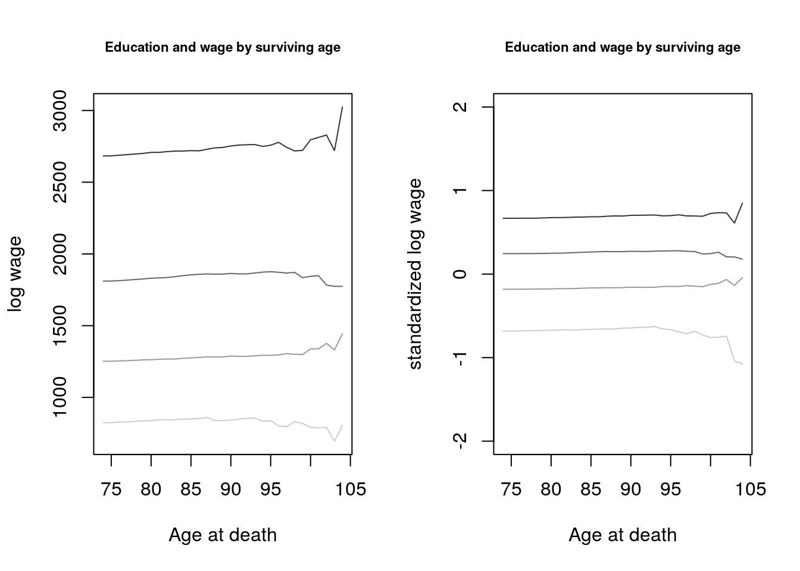

Chapter 10 Coalescent
\title{ \ Dem260 Math Demog
10.1 Outline
Big picture: What is ``coalescent theory’’? Time to (T)MRCA Simulation: Inferring population sizeAn application of Coalescent Theory
10.2 Big picture: The Coalescent: Expectations of the Past
Coalescent theory is not a theory. It’s a model for the probability of different histories``the’’ coalescent is a bit confusing. We’re not inferring the actual history of common ancestry, just the probabilities
An actual``picture’’ > includegraphics[width=1.1]{../coalescent/cutter_diagram.png}
Top panel is a Fisher-Wright instance, ordered so that lines don’t cross. Haplotype is a sequence (we are diploids, each contributing 2 haplotypes). But let’s just think of each line as an individual, for now.We can find The Most Recent Common Ancestor (TMRCA) of sample (dark purple). Who and when would the MRCA of the top two individuals be?
Our sample \(\neq\) even all {} descendants of the MRCA. What does this mean? Our sample \(\neq\) all of the descendants of the MRCA. What does this mean?If we chose two descendants at random, would we always get same MRCA?
When we model coalescence we are thinking backwards in time.
10.3 Our first question: When was MRCA?
If we sample two individuals (today), how long ago was their MRCA?\ (Note: question is not ``who’’)
Our answer will in terms of the probability of MRCA being 1 generation ago, 2 generations ago, etc. We’ll assume Fisher-Wright (constant N, each gen randomly picks parents)The answer is surprisingly simple
Let’s assume we have \(N\) lines in Fisher-Wright (Note: I’m not using \(2N\).)
The chance that two sampled people have same parent is \(1/N\), right? Thus \(P(T_{MRCA} = 1) = 1/N\). What is $P(T_{MRCA} = 2) = $?What is $P(T_{MRCA} = n) = $?
Let’s go to continuous time (reasonable if pop is big and time scale is long).
Hazard of coalescence = \(c = 1/N\). Probability of coalescence at time \(t\) = \(\ell(t) h(t) = e^{-ct} c\)
What is expected time of coalescence? Think life expectancy.
\(E(T_{MRCA})\) if two samples: \(1/c = 1/(1/N) = N\)
Let’s simulate
1 time, without random seed, letting N = 40, ngen = 200, mu = 0 Average over 100 FW simulationsWhat is variance of outcome? Is it what we would expect from exponential?
10.4 Mutation and inference of TMRCA and \(N\)
Say mutations occur at a constant rate \(\mu\) (\(10^{-8}\)?) Each year we would expect \(\mu\) mutations, and over \(T\) years we would expect \(T\mu\) mutations. Say we observe that two people differ at \(k\) sites of the genome. When was TMRCA?How big is the population?
Picture (\(\Lambda\)) Tree length = \(2T\) Expected number of mutations: \[ E(k) = E(2T\mu) = \bar{T} 2 \mu \] Since, \[ \bar{T} = E(TMRCA) = N \] If we observe on average \(\bar{k}\) mutations, then \[ E(k) = N 2 \mu \rightarrow \hat{N} = {\bar{k} \over 2 \mu} \]
10.5 Inference of population size, simulation
We do FW with mutations Average pairwise differences Divide by \(2\mu\) to get our estimateWe can repeat a bunch of times and see average estimate converges to the truth
Coalescence of a sample of \(n\) individuals
This is covered on pages 42 and 43 of GillespieWe’ll just do one quick example, accepting the result
A sample of 3: Note we’re using \(N\) (instead of \(2N\))
Question: If we sample 4, how much of time to TMRCA is do we have 4 branches, 3 branches, and 2 branches?
10.6 Conclusions
We defined the coalescent as the stochastic process going back in time to common ancestors For constant population size, we proved that time to coalescence for a sample pair is exponential. We showed (math and simulation) that \(E(T) = N\).We showed that we could estimate \(N\) from observed mutations if we knew the mutation rate
\end{frame}
10.7 An application of coalescent theory
Application to making inferences about the real history of human populations.
Caveat: We’re still using \(N\) (not \(2N\)) as the number of haploids
10.7.1 Coalesence when population is changing
Ee said hazard of coalescence was \(h = c = 1/N\).What is hazard of coalesence in one generation for two different populations: \(N = 1000\)? \(N = 2000\)?
What if within the same population \(N(t) = 1000\) and \(N(t+1) = 2000\)? (Hint: we still follow FW in allowing children to choose their parents.)
If the population size changes over time \(N(t)\), then hazards of coalescence in will change too: \(h(t) = 1/N(t)\).
N_recent = 5000 ## population last T_thresh years
T_thresh = 1000
N_ancient = 500 ## earlier population
n = 1000 ## sampled individuals
set.seed(0.4886)
T1 <- rexp(n, rate = 1/N_recent) ## give everyone a chance to coalesce
T1[T1 > T_thresh] <- NA ## if they don't in 1st 1000 years, resample them
n2 <- sum(is.na(T1))
T2 <- T_thresh + rexp(n2, rate = 1/N_ancient) ## at ancient rate
T.vec <- c(T1, T2)
hist(T.vec, breaks = seq(0, 5000, 250)) Q: How could we estimate population sizes from this histogram?
Q: How could we estimate population sizes from this histogram?
T.vec <- sort(T.vec)
St = (n:1)/n
par(mfrow = c(1,2))
plot(T.vec, St); abline(v = T_thresh); plot(T.vec, log(St)); abline(v = T_thresh) Q: How can we estimate hazards from this histogram?
Our approach
Say we have \(i\) pairs of haploids We then compute how many pairwise differences there are, but instead of computing \(\bar{k}\), we keep the distributional information \(k_i\). Each \(k_i\) implies a \(T_i\)We then have a set of ``death times’’ (coalescence times), can build a life table, estimate the hazards, and infer \(N(t)\).
10.7.2 Inference from MRCA times: \(n > 2\) comparisons and relative branch lengths
Detour to length of branches A sample of 3: Note we’re using \(N\) (not \(2N\))Intuition: when we have more individuals, there’s more chance that some pair of them will coalesce.
Question: If we sample 4, how much of time to TMRCA do we have 4 branches, 3 branches, and 2 branches?
10.8 Using real mtDNA to estimate population sizes.
Let’s go to .Rmd in RStudio